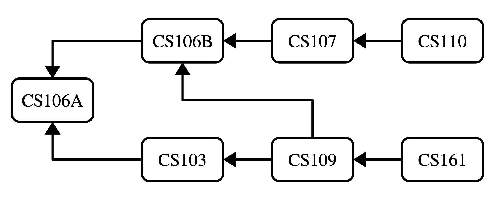

This week’s section exercises explore the ins and outs of content from week 3 – thinking recursively! These problems will help in gaining familiarity with recursive problem-solving.
1) Recursion Tracing
Topics: Recursion call and return, Tracing
Below are a collection of recursive functions, along with an initial call to each of those functions. Determine what value is returned from each function. As a note, some of these functions contain bugs (or at least, highly misleading code structures) that make them not behave in the way you might initially expect, and it's worth making a note, for each function, what specifically that function does that's Cruel and Unusual.
int bishkek(int n) {
if (n <= 2) {
return n;
}
int result = 137;
bishkek(n - 1);
result++;
bishkek(n - 2);
result++;
bishkek(n - 3);
result++;
return result;
}
// (1) Determine what this outputs!
cout << bishkek (8) << endl;
int batken(const Vector<int>& v) {
if (v.isEmpty()) {
return -1;
}
int total = 0;
for (int i = 1; i < v.size(); i++) {
total += v[i];
return batken(v.subList(i));
}
return total;
}
// (2) Determine what this outputs!
cout << batken({1, 2, 3, 4}) << endl;
There’s a lot to talk about here, so let’s go through these one at a time.
In the function bishkek, you might have noticed that the values returned by the recursive calls to bishkek are never used. This means that we can figure out what bishkek(8) returns simply by skipping the recursive calls and looking at what happens to the variable result. In this case, we see that it starts at 137, then is incremented three times. This means that bishkek(8) returns 140, and we don’t have to investigate what goes on inside the recursive calls at all.
The lesson from this function is:
When writing a recursive function that returns a value, always use the return values from your recursive calls!
Now, let’s look at batken. An important detail to notice in this function is that there’s something broken with how the for loop works: the for loop can never execute more than once. That’s because the last line of the for loop is a return statement, and a return statement ends the current function call. As a result, here’s what happens:
batken({1, 2, 3, 4})returns the value ofbatken({2, 3, 4})batken({2, 3, 4})returns the value ofbatken({3, 4})batken({3, 4})returns the value ofbatken({4})batken({4})skips the for loop because the initial value ofiis equal to the size of the vector, so then it proceeds to return 0.
Therefore, the return value is zero.
This leads to this piece of advice:
It is exceedingly rare in any context, and in particular in the context of recursion, to have a for loop that ends with an unconditional return statement.
2) Splitting The Bill
Topic: Recursion, Combinations, Sets
You’ve gone out for coffees with a bunch of your friends and the waiter has just brought back the bill. How should you pay for it? One option would be to draw straws and have the loser pay for the whole thing. Another option would be to have everyone pay evenly. A third option would be to have everyone pay for just what they ordered. And then there are a ton of other options that we haven’t even listed here!
Your task is to write a function
void listPossiblePayments(int total, const Set<string>& people);
that takes as input a total amount of money to pay (in dollars) and a set of all the people who ordered something, then lists off every possible way you could split the bill, assuming everyone pays a whole number of dollars. For example, if the bill was $4 and there were three people at the lunch (call them A, B, and C), your function might list off these options:
A: $4, B: $0, C: $0
A: $3, B: $1, C: $0
A: $3, B: $0, C: $1
A: $2, B: $2, C: $0
A: $2, B: $1, C: $1
A: $2, B: $0, C: $1
…
A: $0, B: $1, C: $3
A: $0, B: $0, C: $4
Some notes on this problem:
- The total amount owed will always be nonnegative. If the total owed is negative, you should use the
error()function to report an error. - There is always at least one person in the set of people. If not, you should report an error.
- You can list off the possible payment options in any order that you'd like. Just don't list the same option twice.
- The output you produce should indicate which person pays which amount, but aside from that it doesn't have to exactly match the format listed above. Anything that correctly reports the payment amounts will get the job done.
The insight that we used in our solution is that the first person has to pay some amount of money. We can't say for certain how much it will be, but we know that it's going to have some amount of money that's between zero and the full total. We can then try out every possible way of having them pay that amount of money, which always leaves the remaining people to split up the part of the bill that the first person hasn't paid.
/**
* Lists off all ways that the set of people can pay a certain total, assuming
* that some number of people have already committed to a given set of payments.
*
* @param total The total amount to pay.
* @param people Who needs to pay.
* @param payments The payments that have been set up so far.
*/
void listPossiblePaymentsRec(int total, const Set<string>& people,
const Map<string, int>& payments) {
/* Base case: if there's one person left, they have to pay the whole bill. */
if (people.size() == 1) {
Map<string, int> finalPayments = payments;
finalPayments[people.first()] = total;
cout << finalPayments << endl;
}
/* Recursive case: The first person has to pay some amount between 0 and the
* total amount. Try all of those possibilities.
*/
else {
for (int payment = 0; payment <= total; payment++) {
/* Create a new assignment of people to payments in which this first
* person pays this amount.
*/
Map<string, int> updatedPayments = payments;
updatedPayments[people.first()] = payment;
listPossiblePaymentsRec(total - payment, people - people.first(),
updatedPayments);
}
}
}
void listPossiblePayments(int total, const Set<string>& people) {
/* Edge cases: we can't pay a negative total, and there must be at least one
* person.
*/
if (total < 0) error("Guess you're an employee?");
if (people.isEmpty()) error("Dine and dash?");
listPossiblePaymentsRec(total, people, {});
}
3) Change We Can Believe In
Topics: Sets, Recursion, Optimization
In the US, as is the case in most countries, the best way to give change for any total is to use a greedy strategy – find the highest-denomination coin that’s less than the total amount, give one of those coins, and repeat. For example, to pay someone 97¢ in the US in cash, the best strategy would be to:
- give a half dollar (50¢ given, 47¢ remain), then
- give a quarter (75¢ given, 22¢ remain), then
- give a dime (85¢ given, 12¢ remain), then
- give a dime (95¢ given, 2¢ remain), then
- give a penny (96¢ given, 1¢ remain), then
- give another penny (97¢ given, 0¢ remain).
This uses six total coins, and there’s no way to use fewer coins to achieve the same total.
However, it’s possible to come up with coin systems where this greedy strategy doesn’t always use the fewest number of coins. For example, in the tiny country of Recursia, the residents have decided to use the denominations 1¢, 12¢, 14¢, and 63¢, for some strange reason. So suppose you need to give back 24¢ in change. The best way to do this would be to give back two 12¢ coins. However, with the greedy strategy of always picking the highest-denomination coin that’s less than the total, you’d pick a 14¢ coin and ten 1¢ coins for a total of fifteen coins. That’s pretty bad!
Your task is to write a function
int fewestCoinsFor(int cents, const Set<int>& coins);
that takes as input a number of cents and a Set<int> indicating the different denominations of coins used in a country, then returns the minimum number of coins required to make change for that total. In the case of US coins, this should always return the same number as the greedy approach, but in general it might return a lot fewer! Once you’ve written this function, discuss with the group whether memoization (described in the handout for Assignment 3) would be appropriate here. If so, go and add memoization to this function. If not, explain why not.
And here’s a question to ponder: given a group of coins, how would you determine whether the greedy algorithm is always optimal for those coins?
You can assume that the set of coins always contains a 1¢ coin, so you never need to worry about the case where it’s simply not possible to make change for some total. You can also assume that there are no coins worth exactly 0¢ or a negative number of cents, since that makes no sense. (No pun intended.) Finally, you can assume that the number of cents to make change for is nonnegative.
The idea behind this solution is the following: if we need to make change for zero cents, the only (and, therefore, best!) option is to use 0 coins. Otherwise, we need to give back at least one coin. What’s the first coin we should hand back? We don’t know which one it is, but we can say that it’s got to be one of the coins from our options and that that coin can’t be worth more than the total. So we’ll try each of those options in turn, see which one ends up requiring the fewest coins for the remainder, then go with that choice. The code for this is really elegant and is shown here:
/**
* Given a collection of denominations and an amount to give in change, returns
* the minimum number of coins required to make change for it.
*
* @param cents How many cents we need to give back.
* @param coins The set of coins we can use.
* @return The minimum number of coins needed to make change.
*/
int fewestCoinsFor(int cents, const Set<int>& coins) {
/* Base case: You need no coins to give change for no cents. */
if (cents == 0) {
return 0;
}
/* Recursive case: try each possible coin that doesn’t exceed the total as
* as our first coin.
*/
else {
int bestSoFar = cents + 1; // Can never need this many coins; see why?
for (int coin: coins) {
/* If this coin doesn’t exceed the total, try using it. */
if (coin <= cents) {
bestSoFar = min(bestSoFar, fewestCoinsFor(cents – coin, coins));
}
}
return bestSoFar + 1; // For the coin we just used.
}
}
We asked whether memoization would be appropriate here, and the answer is "yes, definitely!" Imagine, for example, that we’re using this algorithm on US coins, and we want to see the fewest number of coins required to make change for 10¢. Our options include first using a dime, first using a nickel, and first us- ing a penny. Both of those latter two routes will eventually want to know the best way to make change for 5¢, the case where we use a nickel immediately needs to know this, and the case where we first use a penny will want to know how to do this for 9¢, which eventually needs to know 8¢, etc. down to 5¢. Without using memoization, we’d end up with a ton of redundant computation, which would slow things down dramatically. With memoization, this will be lightning fast for most numbers!
Here's what this might look like:
/**
* Given a collection of denominations and an amount to give in change, returns
* the minimum number of coins required to make change for it. This uses a table
* to memoize its results.
*
* @param cents How many cents we need to give back.
* @param coins The set of coins we can use.
* @param memoizedResults A table mapping numbers of cents to the minimum number
* of coins needed to make that total, for memoization.
* @return The minimum number of coins needed to make change.
*/
int fewestCoinsForMemoized(int cents, const Set<int>& coins, Map<int, int>& memoizedResults) {
/* Base case: You need no coins to give change for no cents. */
if (cents == 0) {
return 0;
}
/* Base case: if we already know the answer, just return it! */
else if (memoizedResults.containsKey(cents)) {
return memoizedResults[cents];
}
/* Recursive case: try each possible coin that doesn’t exceed the total as
* as our first coin.
*/
else {
int bestSoFar = cents + 1; // More than we ever need; see why?
for (int coin: coins) {
/* If this coin doesn’t exceed the total, try using it. */
if (coin <= cents) {
int needed = fewestCoinsForMemoized(cents – coin, coins,
memoizedResults);
bestSoFar = min(bestSoFar, needed);
}
}
/* Store the result for later. */
int result = bestSoFar + 1;
memoizedResults[cents] = result;
return result;
}
}
/**
* Given a collection of denominations and an amount to give in change, returns
* the minimum number of coins required to make change for it.
*
* @param cents How many cents we need to give back.
* @param coins The set of coins we can use.
* @return The minimum number of coins needed to make change.
*/
int fewestCoinsFor(int cents, const Set<int>& coins) {
Map<int, int> memoizedResults;
return fewestCoinsForMemoized(cents, coins, memoizedResults);
}
4) Ordering Prerequisites
Topics: Maps, Vectors, Permutations, Recursion
Imagine you have some collection of tasks that need to be done. Some of those tasks might depend on one another. For example, you might be navigating the CS Core, shown here:

Here, the arrows indicate prerequisites. CS106B has CS106A as a prerequisite, CS110 has CS107 as a prerequisite, CS109 has both CS106B and CS103 as prerequisites, and CS106A has no prerequisites. Assuming you can only take one CS class per quarter, what possible orderings are there for these classes that don’t violate any prerequisites? Your task is to write a function
void listLegalOrderingsOf(const Map<string, Set<string>>& prereqs);
that takes as input a Map representing the prerequisite structure, then lists all possible orders in which you could complete those tasks without violating the prerequisites. The prereqs map is structured so that each key is a task and each value is the set of that task’s immediate prerequisites. For example, the CS Core would be represented by the following map:
"CS103" : { "CS106A" }
"CS106A" : { }
"CS106B" : { "CS106A" }
"CS107" : { "CS106B" }
"CS109" : { "CS103", "CS106B" }
"CS110" : { "CS107" }
"CS161" : { "CS109" }
Given this structure, your function would then print out all the following:
CS106A, CS106B, CS107, CS110, CS103, CS109, CS161
CS106A, CS103, CS106B, CS109, CS161, CS107, CS110
CS106A, CS106B, CS107, CS103, CS109, CS161, CS110
(... many, many more ...)
Some notes on this problem:
- Every task will be present in the Map. A task with no prerequisites will be represented as a key whose value is an empty Set, as is the case for CS106A in the above example.
- Your function must not list off the same ordering twice.
- Your function must not work by simply generating all possible permutations of the tasks and then printing out just the ones that obey all the constraints. That would just be too inefficient.
- Your output doesn’t have to exactly match our format. List off the orderings in whatever format you’d like. In case it helps, you can directly print a Map, Set, Vector, or Lexicon to cout.
- It’s entirely possible that the set of tasks you’re given can’t actually be ordered. For example, if the task "Learn Recursion" depends on "Learn Recursion", then no matter how you order things the prerequisites won’t be satisfied. In that case, your function should just not print any- thing at all. Chances are, you won’t need to do anything fancy to make this work. It’ll just fall out naturally.
There are a number of different ways to do this. The key insight we used in this solution is that at each point in time, we can choose any task to do as the next task provided that we’ve already handled all its prerequisites. That gives us some number of things to try at each step, so we’ll try doing each of them first.
void listLegalOrderingsRec(const Map<string, Set<string>>& prereqs,
const Vector<string>& tasksPerformed,
const Set<string>& tasksRemaining) {
/* Base case: If there are no remaining tasks, output this as one possible
* option.
*/
if (tasksRemaining.isEmpty()) {
cout << tasksPerformed << endl;
return;
}
/* Otherwise, try adding in as a possible next task all tasks that have had
* all their prerequisites satisfied.
*/
/* For convenience, convert the vector of tasks into a set. */
Set<string> tasksDone;
for (string task: tasksPerformed) {
tasksDone += task;
}
for (string task: remainingTasks) {
if (prereqs[task].isSubsetOf(tasksDone)) {
Vector<string> newTasks = tasksPerformed;
newTasks += task;
listLegalOrderingsRec(prereqs, newTasks, tasksRemaining – task);
}
}
}
void listLegalOrderingsOf(const Map<string, Set<string>>& prereqs) {
Set<string> tasks;
for (string task: prereqs) {
tasks.add(task);
}
listLegalOrderingsRec(prereqs, {}, tasks);
}